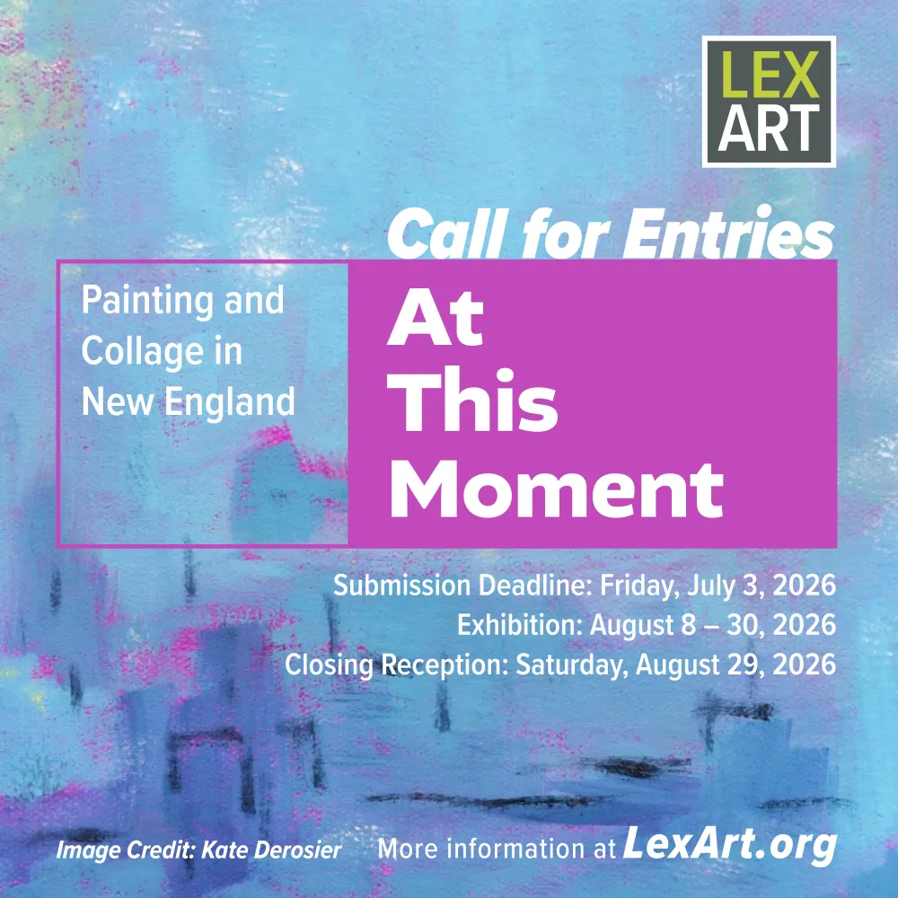

CALL FOR ART
The LexArt Painting Studio Group invites New England artists to submit work for our upcoming exhibit. A closing reception will be held on Saturday, August 29, 2026.
At This Moment celebrates painting in all its forms and its long-standing role in how people express themselves. The exhibition welcomes work in all painting media, as well as collage and mixed-media pieces with a strong painted element. The exhibit will be juried by Deborah Krieger, Outreach and Research Manager at Louis Stern Fine Arts. The show will be displayed in LexArt's Molly Harding Nye Gallery, an outstanding museum-style exhibition space. Artists will also be able to opt-in to an online exhibit, viewable here on AtThisMoment.show from August 22, 2026 onward.
ABOUT THE EXHIBIT
At This Moment will provide a showcase for recent work from painters across New England, working in a broad array of styles and media. We encourage submissions from both emerging and established artists living or working anywhere in New England. Monetary prizes will be given for outstanding work (see Submission Guidelines).
SUBMISSION PROCESS
Artwork must be submitted through the LexArt website.
- Read the Submission Guidelines.
- Pay the $30 entry fee here to begin the application process.
- After paying the entry fee, the LexArt website will allow you to access the submission form.
TIMELINE
- Submission deadline: Friday, July 3, 2026
- Notification of accepted works: On or about July 15, 2026
- Show on view at LexArt: Saturday, August 8, 2026 – Sunday, August 30, 2026
- Online gallery opens: Saturday, August 22, 2026
- Closing reception: Saturday, August 29, 2026
ABOUT LEXART
The Lexington Arts and Crafts Society (LexArt) is committed to sparking joy, enriching lives, and building community through the practice, teaching, and sharing of art and craft. The Painting Studio Group is one of nine focused art and craft studio groups at LexArt. Under the dynamic leadership of a new Executive Director and supported by an enthusiastic and active volunteer backbone, LexArt sponsors a variety of innovative public exhibits, workshops, demonstrations, and events, both online and in-person at our 11,000 sq. ft. facility located in the center of Lexington, MA.
FOR MORE INFORMATION
Kate Derosier – kate@katederosier.com
- Questions about artist or artwork eligibility
- Questions about interpreting the submission guidelines
- Questions about the online exhibit or this website
Chase Jones – chase.jones@lexart.org or 781.862.9696.
- Technical issues with the submission process
- Questions about entry fee
- Questions about artwork drop off or pick up
- Questions about LexArt